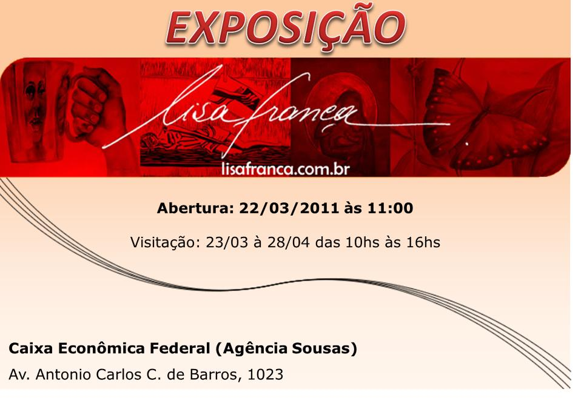
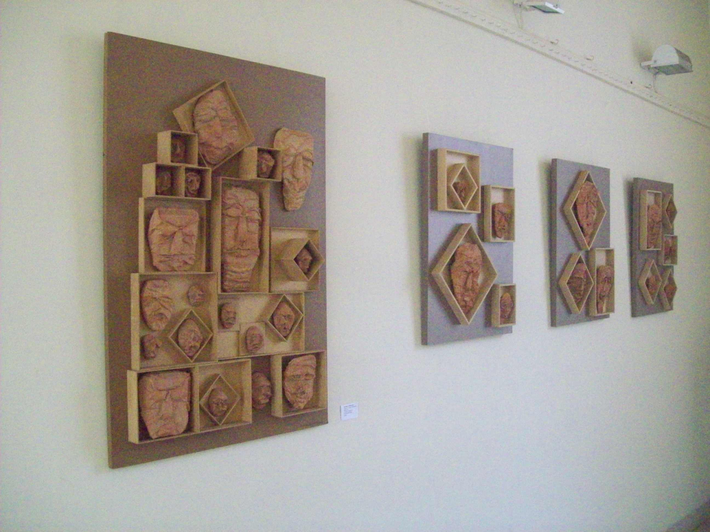

Exposições 2010
Exposições: 2010 | 2011
|
Exposições |
Indica |
|
No Exterior
Lima - Peru
 Exposição: “Grabado: Espacios Liberados”.
Curadoria (setor PUC-Campinas): Paulo Cheida Sans.
Expositores: Grupo Olho Latino: Alex Roch, Cibele Marion Sisti, Celina Carvalho, Elika Ito, Flávia Bresil Palhares, Lisa França, Maricel Fermoselli, Paulo Cheida Sans, Regiane Capp Couto Buccioli, Suely Arnaldo, Walcirlei Siqueira e Young Koh.
Visitação: 18 de novembro a 19 de dezembro de 2010. Entrada Franca.
Local: ICPNA - Instituto Cultural Peruano Norte-Americano, Lima - PERU.
Endereço: Av. La Marina 24000, San Miguel - Lima, Peru.
Lima - Peru.
 Exposição: “Agregados de la expresión colectiva” – Gravuras do Grupo Olho Latino.
Curadoria: Paulo Cheida Sans.
Expositores:
Grupo Olho Latino: Alex Roch, Cibele Marion Sisti, Celina Carvalho, Elika Ito, Flávia Bresil Palhares, Lisa França, Maricel Fermoselli, Paulo Cheida Sans, Regiane Capp Couto Buccioli, Suely Arnaldo, Walcirlei Siqueira e Young Koh.
Visitação: 29 de outubro a 06 de novembro de 2010. Entrada Franca.
Local: Taller Kimkilen, Lima - PERU.
Endereço: Av. Grau 170, Barranco - Lima, Peru.
UMSA
La Paz - Bolívia
 Exposição: “Estampa 2010 Bolívia - Brasil”.
Curadoria (setor Brasil): Paulo Cheida Sans.
Expositores:
Bolívia: Alejandro Salazar, Ana Barroso Calle, David Vargas, Diego Romay Salinas, Juan Ignacio Revollo, Leonel Jurado, Marco Guzman, Norka Paz Rodo, Oscar Velasquez, Pablo Ruiz, Paola Guardia Arzabe, Paola Rozo, Rafael Maldonado e Veronica Perez Sesano;
Brasil: Alex Roch, Celina Carvalho, Cibele Marion Sisti, Elika Ito, Euclides Sandoval, Flávia Bresil Palhares, Lisa França, Maricel Fermoselli, Paulo Cheida Sans, Regiane Capp Couto Buccioli, Rosmary Silva, Suely Arnaldo, Walcirlei Siqueira, Yoon Gee Jeen e Young Koh.
Abertura: 11 de outubro de 2010.
Período da mostra: 11 a 24 de outubro de 2010.
Local: Sala de Exposiciones de la Facultad de Arquitectura de la Universidad Mayor de San Andrés (UMSA). La Paz - BOLÍVIA.
No Museu Olho Latino
 Exposição: “Agregados” – mostra do Grupo Olho Latino.
Período da mostra: 23 de outubro a 15 de dezembro de 2010. (mostra prorrogada até 15 de dezembro)
Expositores: Alex Roch, Celina Carvalho, Cibele Marion Sisti, Elika Ito, Flávia Bresil Palhares, Lisa França, Maricel Fermoselli, Paulo Cheida Sans, Regiane Capp Couto Buccioli, Suely Arnaldo, Walcirlei Siqueira, Young Koh
Curadoria: Paulo Cheida Sans.
Visitação: de terça a sábado, das 09h às 17h.
Local: Museu Olho Latino (mezanino do Centro de Convenções e Eventos “Victor Brecheret”).
Endereço: Al. Lucas Nogueira Garcez, 511 - Estância de Atibaia, SP.
Realização: Museu Olho Latino e Prefeitura Municipal da Estância de Atibaia.
Telefone: (11) 4412 7776.
Site: www.olholatino.com.br
E-mail:
Este endereço de e-mail está protegido contra spambots. Você deve habilitar o JavaScript para visualizá-lo.
 Exposição: "5ª Bienal do Esquisito" - Reflexão Visual sobre a Globalização - Aqui já é lá.
Curador: Paulo Cheida Sans
Comissão de Seleção: Celina Carvalho, Lisa França, Paulo Cheida Sans.
Comissão de Premiação: Kenichi Kaneko, Marco do Valle, Paulo Cheida Sans.
Convidado Especial: Hélio Leites.
Convidados: Avelino Bezerra, Cia. Teatral Pirandello, Euclides Sandoval, Gláuber de Lima e Luciene Sans, Malu Neves, Matias Picón, Miguel Messias dos Santos.
Seção "História das Bienais do Esquisito": Alex Roch, Celina Carvalho, Cibele Marion Sisti, Edson Beleza, Elika Ito, Euclides Sandoval, Flávia Bresil Pallhares, Lisa França, Márcio Zago, Maricel Fermoselli, Paulo Cheida Sans, Regiane Capp Couto Buccioli, Rita Moura, Suely Arnaldo, Valner Cintra, Walcirlei Siqueira, Yoonjee Geem, Young Koh.
Premiados:
Grande Prêmio Olho Latino: Fernando Ekman - São Paulo, SP.
Prêmio Olho Latino: Bárbara de Azevedo - São Paulo, SP; Coletivo de Ações Artísticas (Des)Esperar: Andressa Argenta Orozco, Fábio Purper Machado, Francieli Regina Garlet e Tamiris Vaz - Santa Maria, RS; Fernando Thommen - Cunha, SP; Grupo PARALADOSANJOS: Halex Farlys, Leonardo Steinberg, Marcos Becker, Marilia Ennes e Mauro Braga - Campinas, SP; Isabela Darcie e Roberta Santana - Campinas, SP; Kauê Garcia - Campinas, SP; Lorena Hollander - São Paulo, SP; Nestor Lampros - Atibaia, SP; Renato de Sousa - Louveira, SP; Vivian Puxian - São Paulo, SP.
Menção Especial do Júri: Ângela Waltrick - Lages, SC; Gruppo Sinestetico: Albertin , Sassu , Scordo - Torre Glia (PD), ITÁLIA; Olga Flores - Lima, PERU.
Participantes: Adilson Lopes - São Paulo, SP; Alex dos Santos - Jaboticabal, SP; Ana Bittar - Campinas, SP; André de Barroso da Veiga - Curitiba, PR; Angela Waltrick - Lages, SC; Bárbara de Azevedo - São Paulo, SP; Bianca Scliar - Florianópolis, SC; Cabelin - Hortolândia, SP; Camila Lagoeiro - Campinas, SP; Carol Brandi - São Caetano do Sul, SP; Carolina Paz - Campos do Jordão, SP; Carolina Vecchio - Brasília, DF; Cássio Luis Luciti Pellicciari - Hortolândia, SP; Coletivo de Ações Artísticas (Des)Esperar - Santa Maria, RS; Daniel Choma - Florianópolis, SC; Dora Meirelles - Vinhedo, SP - e Augusto Meneghin - Araras, SP; Eni Ilis - Campinas, SP; F.Thommen - Cunha, SP; Fernando Ekman - São Paulo, SP; Geraldo Porto - Campinas, SP; Gruppo Sinestetico - Torre Glia, ITÁLIA; Isabela Darcie - Campinas, SP; Isabelle Catucci da Silva - Curitiba, PR; João Bosco - Hortolândia, SP; Kauê Garcia - Campinas, SP; Lorena Hollander - São Paulo, SP; Márcia Santtos - Santos, SP; Márcio Pannunzio - Ilhabela, SP; Maringelli - São Paulo, SP; Milton Mota - Santo André, SP; Nestor Lampros - Atibaia, SP; Olga Flores – Lima, PERU; Otavio Fabro - São Paulo, SP; PARALADOSANJOS – Campinas, SP; Renato de Sousa - Louveira, SP; Roberta Santana - Campinas, SP; Ronaldo Occy - Duque de Caxias, RJ; Vera Figueiredo - Campinas, SP; Vivian Puxian - São Paulo, SP.
Abertura: 15 de maio, às 17h.
Período da mostra: de 15 de maio a 26 de junho de 2010.
Encerramento e divulgação dos artistas premiados: 26 de junho de 2010.
Local: Museu Olho Latino – Centro de Convenções “Victor Brecheret”.
Endereço: Alameda Prof. Lucas Nogueira Garcêz, 511 – Parque das Águas – Estância de Atibaia, SP - CEP: 12941-650.
Telefone: (11) 4412-7776.
Realização: Museu Olho Latino e Prefeitura da Estância de Atibaia com o apoio do Governo do Estado de São Paulo, Secretaria de Estado da Cultura - Programa de Ação Cultural.
Em outros locais
Laboratório das Artes Franca, SP  Exposição: "Agregados de la expresión colectiva" do Grupo Olho Latino.
Curadoria: Paulo Cheida Sans.
Período da mostra: 18 de outubro a 12 de novembro de 2010.
Visitação: de segunda a sexta, das 10h às 12h e das 14h às 17h.
Local: Laboratório das Artes de Franca - Lab.
Endereço: Rua Cuba, 1099 - Jardim Consolação - Franca, SP.
Realização: Museu Olho Latino e Prefeitura Municipal da Estância de Atibaia.
Telefone: (16) 3722-5004.
Pinacoteca Municipal
Piracicaba, SP
 Exposição: “Apreços – Gravuras do Acervo Olho Latino”
100 obras de 42 artistas representantes de 13 países.
Curadoria: Paulo Cheida Sans.
Abertura: 09 de abril, às 20h.
Data: de 10 de abril a 02 de maio de 2010.
Visitação: de segunda a sexta-feira, da 8h às 17h. Sábados, domingos e feriados das 14h às 18h. Entrada franca.
Local: Pinacoteca Municipal “Miguel Dutra”.
Endereço: Rua Moraes Barros, 233 – Centro, PIRACICABA, SP.
|
 Os artistas do Grupo Olho Latino, Celina Carvalho, Lisa França e Paulo Cheida Sans, estão participando do livro “Obra Prma”, lançado recentemente no Círculo Militar de Campinas.
 A mostra "Prelúdios" de Celina Carvalho, com curadoria de Lisa França, está aberta até 09 de junho de 2011 na Caixa Econômica Federal (Agência Sousas - Campinas, SP).
 O artista Walcirlei Siqueira expõe até final de abril a sua série "Horóscopo Chinês: Animais e Símbolos" na Galeria Thomaz Perina da Academia Campineira de Letras e Artes.

A mostra "Pinturas, Desenhos e Esculturas" da artista Lisa França está aberta na Caixa Econômica Federal (agência Sousas - Campinas, SP) até o dia 28 de abril.

A artista Celina Carvalho expõe a mostra “Vibração do Tempo” de 14 de março a 01 de abril na Galeria de Arte Lélio Coluccini da Academia Campinense de Letras. A curadoria é de Marly Stracieri.
 A mostra "Formas e Cores Abstratas", com obras das artistas Celina Carvalho e Yoon Jee Geem, contando com a curadoria de Walcirlei Siqueira, está aberta no Espaço Cultural ART & DESIGN, em Americana, até o dia 23 de março.
|